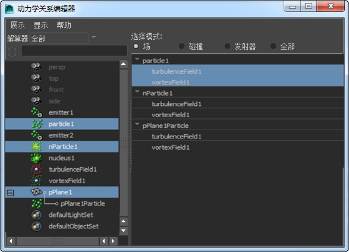
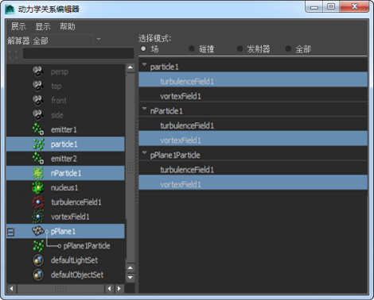

以下示例介绍如何使用“动力学关系”(Dynamic Relationships)编辑器连接“漩涡”(Vortex)场，而后者已连接到 Maya 经典粒子对象、柔体及 nParticle 对象。然后，“漩涡”(Vortex)场与经典粒子对象断开连接。
与 Maya 场连接及断开连接
- 打开动力学关系编辑器，方法是选择“窗口 > 关系编辑器 > 动力学关系”(Windows > Relationship Editors > Dynamic Relationships)。
- 在“动力学关系”(Dynamic Relationships)编辑器的左面板中，选择要更改其连接的对象。
在本示例中，选择左面板中的粒子、柔体和 nParticle 对象。按住
 键并单击可选择多个对象。
键并单击可选择多个对象。 - 将“选择模式”(Selection modes)设置为“场”(Fields)。
当前连接到粒子对象的场在右面板中的 particle1 下亮显。此外，可以连接到柔体和 nParticle 对象的场列出在 pPlane1Particle 和 nParticle1 下。默认情况下，当您选择左面板中的柔体对象时，对象将显示在右面板中，并且其关联的粒子对象将附加到其对象名称末尾。
 - 若要将“漩涡”(Vortex)场连接到柔体和 nParticle 对象，请单击 pPlane1Particle 和 nParticle1 下的 vortexField1。
“漩涡”(Vortex)场现在已连接到柔体和 nParticle 对象。
- 若要将“漩涡”(Vortex)场与粒子对象断开连接，请在 Particle1 下单击 vortexField1。
“漩涡”(Vortex)场已与粒子对象断开连接。
